Background historical notes for a modern introduction to Natural Language Processing.
This article is divided into three (partially overlapping) threads:
Understanding the history of computing provides essential context for appreciating the sophisticated technology underlying modern natural language processing. Algorithms and computation are not inventions of the modern era—they have been fundamental to human civilization for millennia. This section traces the evolution from ancient mathematical procedures to the electronic computers that make contemporary NLP possible.
The earliest evidence of algorithmic thinking predates written history, but we have remarkable artifacts demonstrating sophisticated mathematical computation from ancient Babylon. The clay tablet known as Plimpton-322, dating to approximately 1800 BCE and now held at Columbia University Library, contains a list of Pythagorean triples—sets of three positive integers $a$, $b$, and $c$ that satisfy the equation $a^2 + b^2 = c^2$. These triples were essential for computing land areas for taxation purposes.
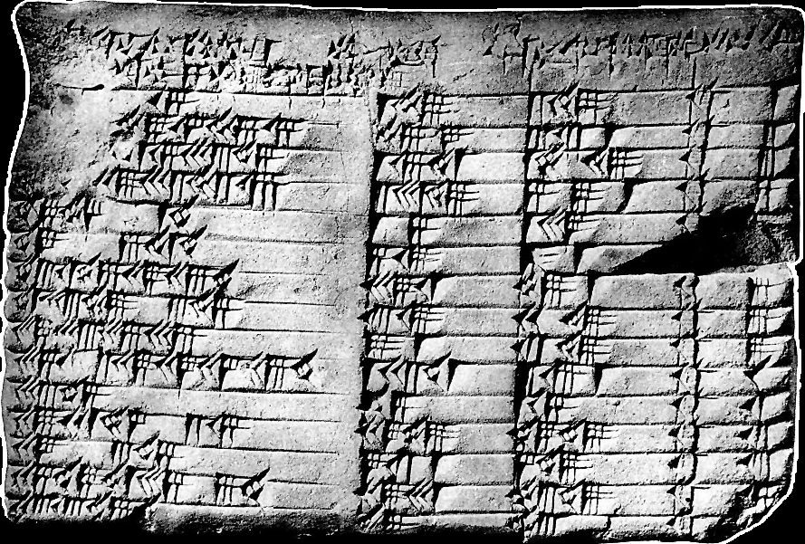
The Plimpton-322 clay tablet (c. 1800 BCE), one of the earliest known examples of algorithmic mathematical computation.
The tablet presents a carefully constructed table of numerical data encoding right-triangle solutions. It represents pre-computed output of a systematic generation algorithm. There are other related tablets from that period such as YBC-6967 (held at Yale University), which provide crucial context by showing the underlying school algorithm—based on reciprocal pairs and quadratic techniques—that could produce exactly such tables, making Plimpton-322 intelligible as a compiled product of that algorithmic tradition.
Euclid, a Greek mathematician who lived around 300 BCE, contributed one of the oldest and most well-known algorithms still in use today: the algorithm for computing the greatest common divisor (GCD) of two numbers.
The basic idea is elegantly simple: repeatedly replace the larger number by the remainder when it is divided by the smaller number. This process continues until one of the numbers becomes zero, at which point the other number is the GCD.
Example: Computing GCD(270, 192)
The GCD is 6.
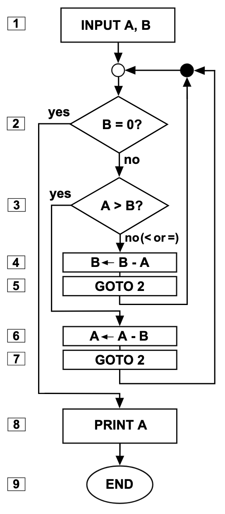
Flowchart representation of the Euclidean algorithm for computing the greatest common divisor of two numbers.
The analysis of this algorithm's efficiency by Gabriel Lamé in 1844 marked the beginning of computational complexity theory. Lamé showed that the number of steps is logarithmic in the input size—an early example of analyzing algorithmic efficiency.
Muhammad ibn Musa al-Khwarizmi (c. 780–850 CE) was a Persian mathematician, astronomer, and geographer who worked in the House of Wisdom in Baghdad. He is often called the "father of algebra" for his book Kitab al-Jabr wa-l-Muqabala, which systematically presented methods for solving linear and quadratic equations.
Two fundamental terms in computer science derive from al-Khwarizmi:
Al-Khwarizmi's crucial contribution was formalizing processes for solving equations using variables rather than specific numbers, creating procedures that could be applied to multiple instances of the same problem type. This approach proved highly amenable to mechanization centuries later.
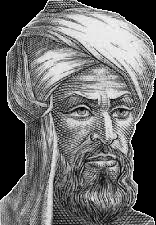
Muhammad ibn Musa al-Khwarizmi (c. 780–850 CE), the Persian mathematician whose name gives us the word "algorithm."
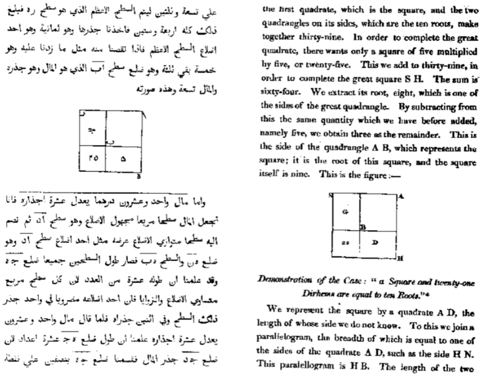
A page from a Latin translation of al-Khwarizmi's foundational algebra text.
Joseph Marie Charles Jacquard invented the Jacquard Loom, the earliest programmable machine. Using punched cards to control weaving patterns, the loom allowed ordinary workers to produce intricate designs that previously required master weavers. Each card represented a specific pattern instruction.
This innovation led to significant social unrest—many professional weavers, fearing job loss, broke into factories and destroyed the new looms, making this one of the first instances of technological unemployment and industrial sabotage.
The punched card concept would prove far more consequential than Jacquard could have imagined.
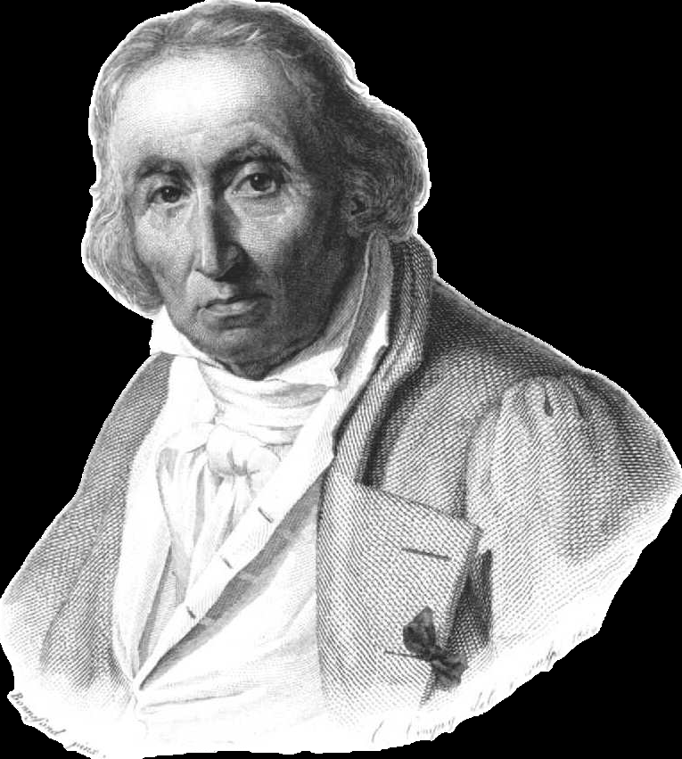
Joseph-Marie Jacquard (1752–1834), inventor of the programmable loom.
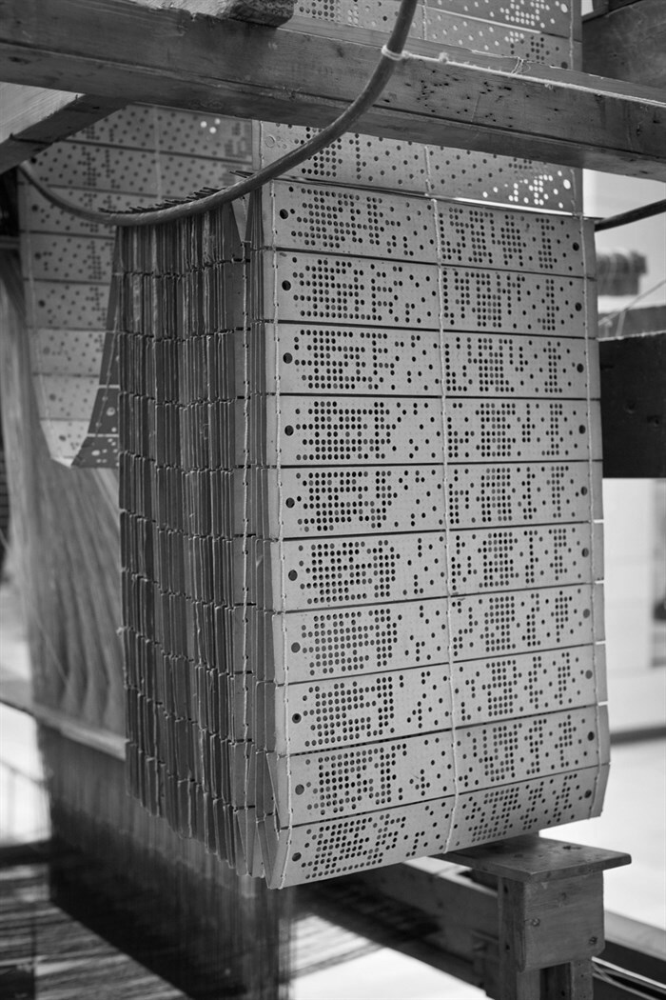
Punch cards used in the Jacquard Loom—the first example of stored programs.
Charles Babbage (1791–1871) recognized the potential of Jacquard's punched cards for general computation. He designed the Analytical Engine, a mechanical computer that would use such cards for input.
Ada Lovelace (1815–1852), working with Babbage, developed some of the first algorithms intended for implementation on a computing machine. Together, they invented foundational programming concepts including:
Though the Analytical Engine was never actually used in practice due to technological limitations of the era, its design anticipated modern computer architecture by over a century.
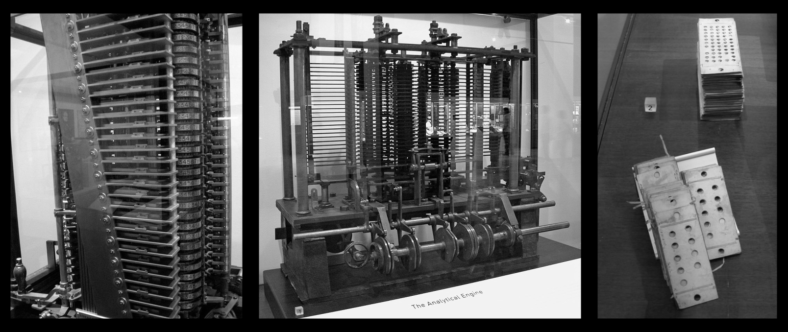
Charles Babbage's Analytical Engine—the first design for a general-purpose mechanical computer.
Herman Hollerith, a Columbia University engineering graduate, invented the Hollerith Card Tabulating Machine to address a practical problem: the U.S. Census Bureau needed to process growing population data more efficiently.
The machine used punched cards (sized to match dollar bills, since money-sorting equipment already existed). A clerk would encode census questionnaire responses by punching holes in cards. When pins passed through the holes into pools of mercury, electrical circuits completed, and counters recorded the results.
The 80-column format of these punch cards is the origin of the 80-character line limit still found in many programming style guides today.
Hollerith founded the Tabulating Machine Company, which later became IBM (International Business Machines), one of the most influential technology companies in history.
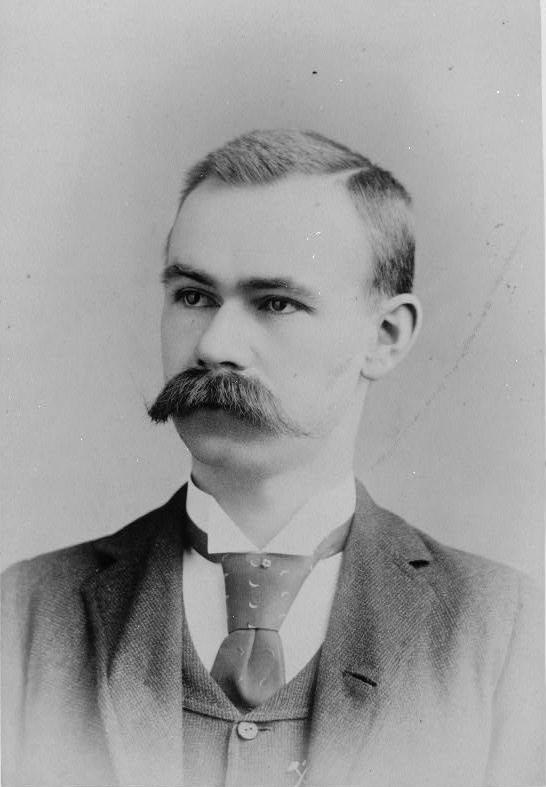
Herman Hollerith (1860–1929), inventor of the tabulating machine and founder of what would become IBM.
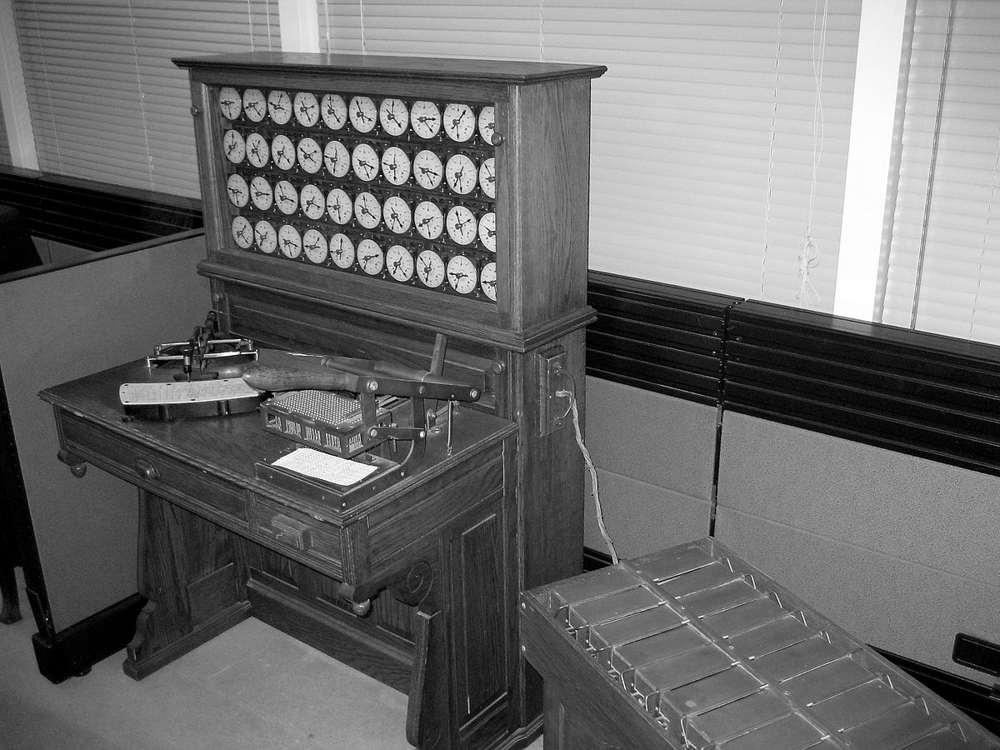
The Hollerith Tabulating Machine used for the 1890 U.S. Census.
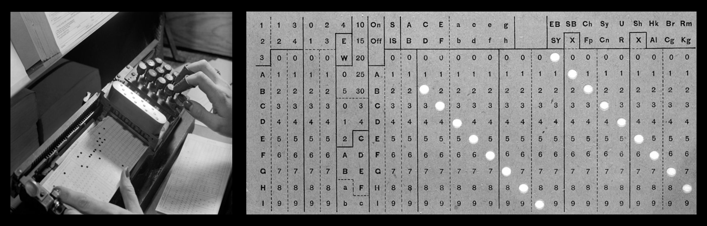
Punch card reader and the encoding scheme used to represent data.
In the 1920s and 1930s, mathematicians sought to formalize the notion of an "effective procedure"—what exactly could be computed, and what were the limits of computation?
Alan Turing (1912–1954) introduced the Turing machine in 1936—an abstract device that manipulates symbols on a tape according to a set of rules. Despite its simplicity, Turing proved that this theoretical device could simulate the logic of any algorithm.
The Church-Turing Thesis (developed independently by Turing and Alonzo Church) posits that any computation performable algorithmically can be expressed in the formalism of Turing machines. There are many other models of computation (such as lambda calculus, recursive function theory, or cellular automata), but they are all equivalent to Turing's original theory.
Turing also proved that some problems are undecidable—no algorithm can solve them in general. The most famous example is the Halting Problem: there is no general algorithm that can determine whether an arbitrary program will eventually terminate or run forever. This result established fundamental limits on what can be computed.
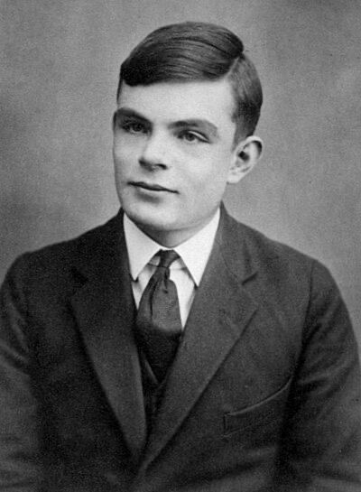
Alan Turing (1912–1954), mathematician and computer scientist who formalized the concept of computation.
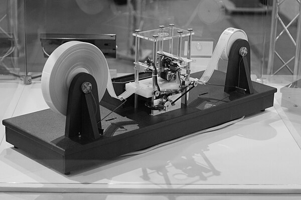
A physical model demonstrating the operation of a Turing machine.
World War II accelerated computer development dramatically. Three major projects drove innovation:
These needs motivated the construction of the first electronic computers, including ENIAC (1945) and subsequent machines.
Mainframes stored both data and programs electronically, departing from previous mechanical systems. Programs were written in machine language, where each instruction was represented by a unique number. This led to the development of assembly language, a more human-readable representation.
Key innovations from this era include:
The discovery of the first documented computer "bug"—an actual moth found in a relay of the Harvard Mark II in 1947 by Grace Hopper's team—gave us the terminology we still use for software errors (although Thomas Edison introduced the term debugging to engineering decades earlier).
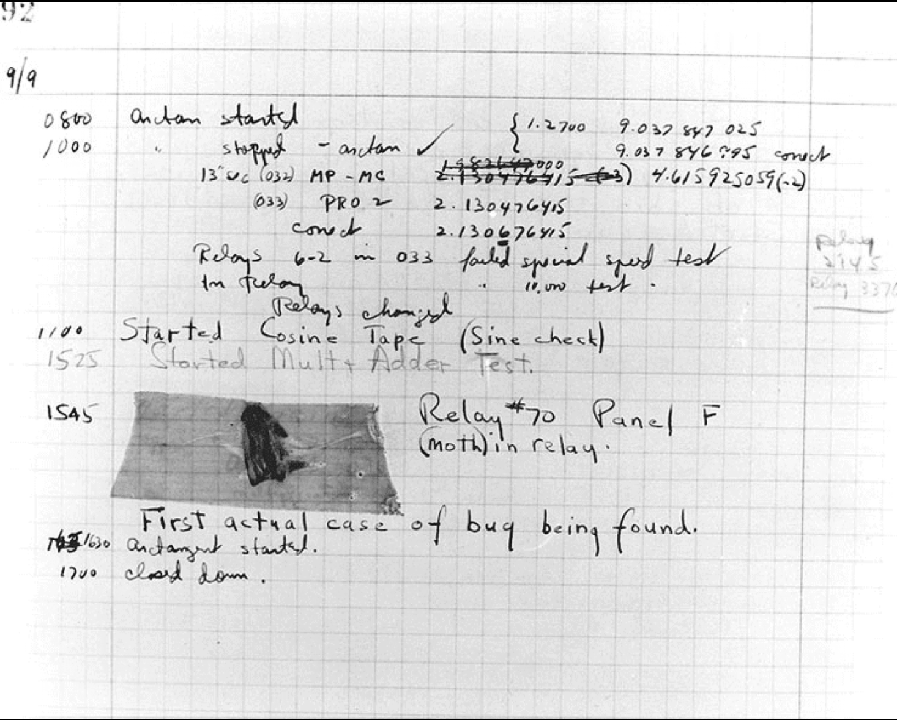
The original "bug"—a moth found in a relay of the Harvard Mark II computer in 1947, with the notation "First actual case of bug being found."
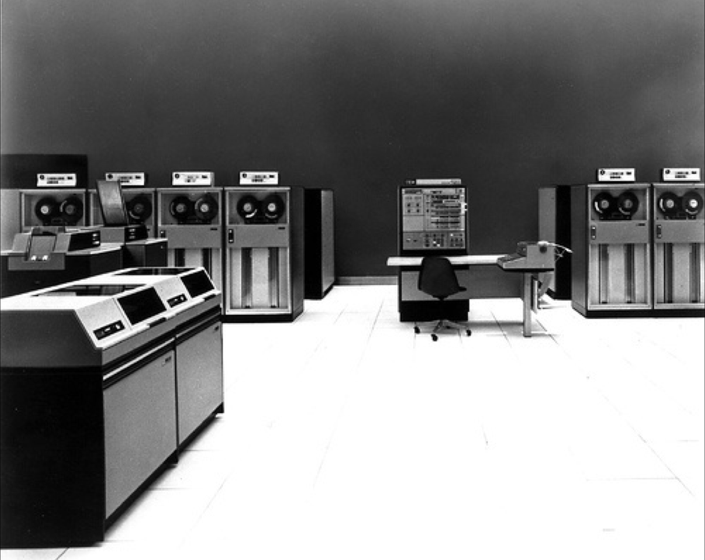
A mainframe computer installation from the 1960s, showing the scale of computing infrastructure.
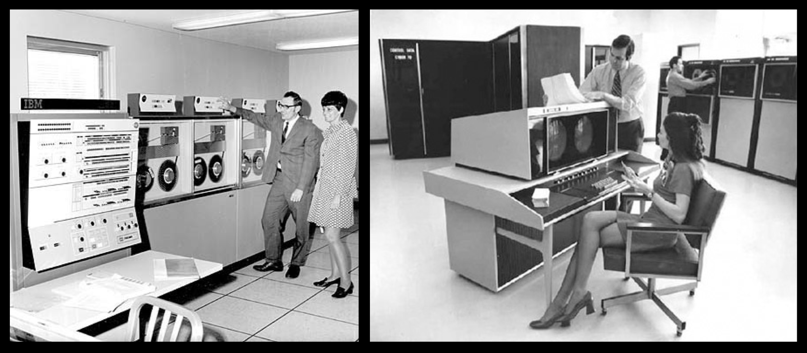
Operators working with mainframe computers, demonstrating the human-machine interaction of the era.
Time-sharing systems in the 1960s allowed multiple users to interact with a computer simultaneously, each under the illusion of having dedicated access. The teletype machine enabled this interaction.
Several computing conventions trace to this era:
The introduction of CRT terminals allowed editing code on screen rather than on physical media, requiring new software called text editors. The vi editor, created as the "visual mode" of an earlier editor, introduced keyboard navigation (HJKL keys) still popular among programmers today.
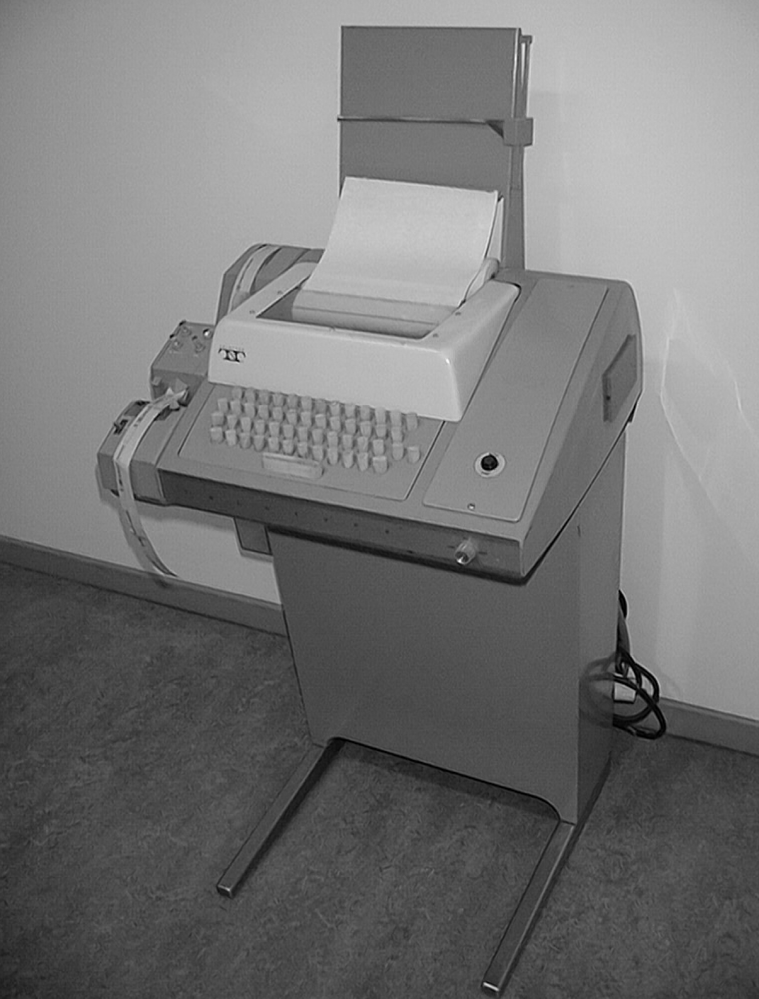
A teletype terminal used for interactive computing.
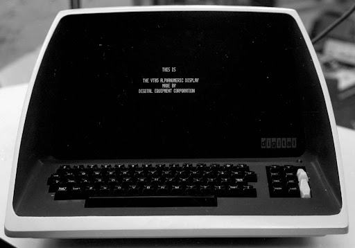
The DEC VT05 terminal—an early CRT display terminal.
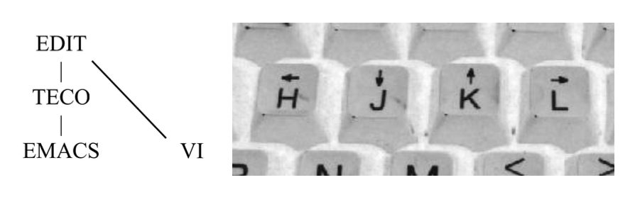
The evolution of text editors and the origin of HJKL navigation keys.
The miniaturization of computing proceeded through several waves:
Moore's Law, articulated by Intel co-founder Gordon Moore in 1965, observed that the number of transistors on integrated circuits doubles approximately every two years. This exponential growth has held for decades, enabling the computational power required for modern AI and NLP.
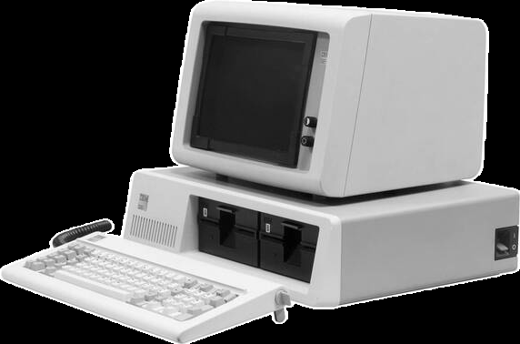
The IBM Personal Computer (1981), which helped establish the personal computing revolution.
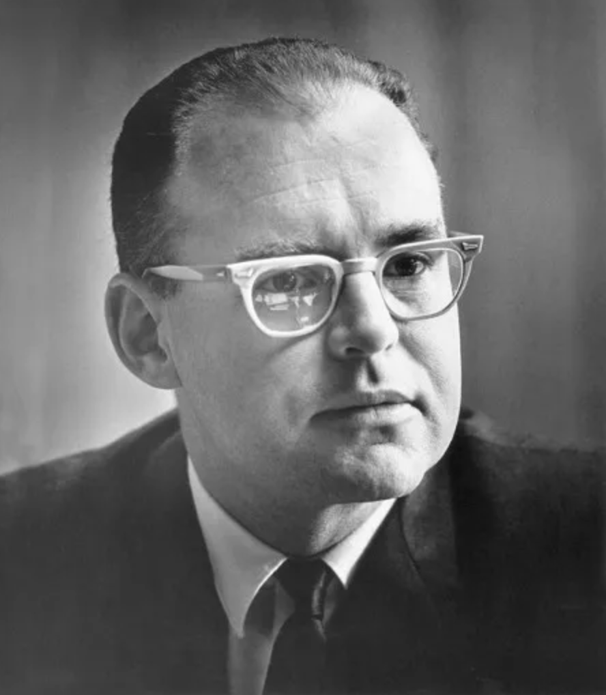
Gordon Moore, whose observation about transistor density ("Moore's Law") predicted decades of exponential growth in computing power.
The field of Artificial Intelligence was formally established at the Dartmouth Summer Research Project in 1956. John McCarthy's proposal articulated the founding hypothesis:
"The study is to proceed on the basis of the conjecture that every aspect of learning or any other feature of intelligence can in principle be so precisely described that a machine can be made to simulate it."
The workshop brought together McCarthy, Marvin Minsky, Claude Shannon, Allen Newell, and Herbert Simon—figures who would shape the field for decades.
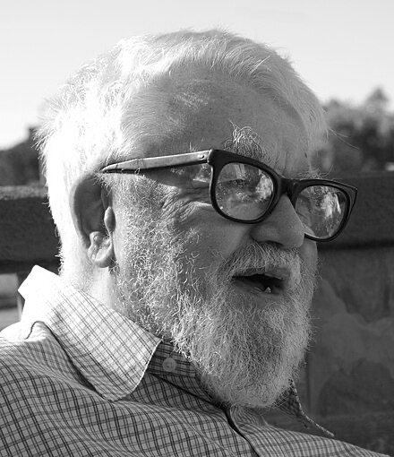
John McCarthy (1927–2011), who coined the term "Artificial Intelligence" and organized the Dartmouth Conference in 1956.
Early AI research, later dubbed GOFAI (Good Old-Fashioned AI), emphasized symbolic reasoning and logic-based systems. The core technique was search algorithms—systematically exploring possible solutions.
Key achievements:
This era was characterized by tremendous optimism. Researchers predicted that machine intelligence matching humans was just years away.
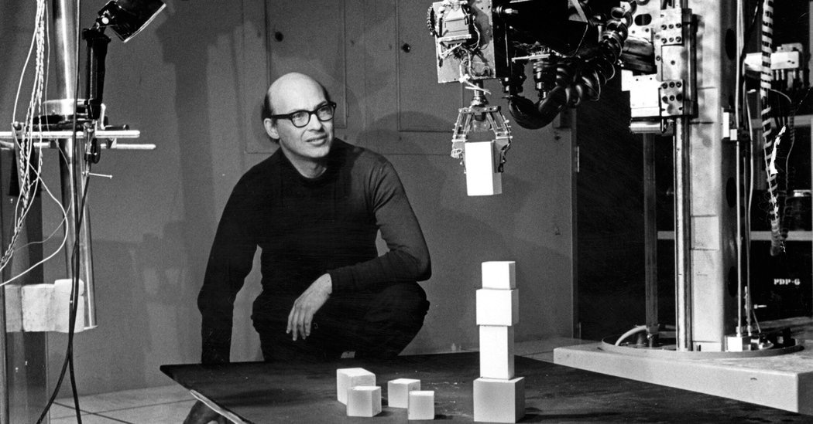
Marvin Minsky (1927–2016), co-founder of MIT's AI Laboratory and pioneer in artificial intelligence.
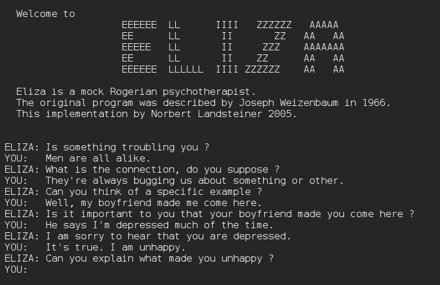
A session with ELIZA (1966), the early chatbot that simulated a Rogerian psychotherapist using pattern matching.
Computational complexity theory revealed fundamental barriers to the symbolic AI approach:
Theoretical barriers went even deeper:
Researchers shifted from general problem-solving to encoding domain-specific human expertise:
Expert systems promised to capture expert knowledge in rules, and significant commercial investment followed. However, the knowledge acquisition bottleneck—the difficulty of extracting and encoding expert knowledge as rules—limited their scalability.
AI's emphasis on logical reasoning drew on a long intellectual heritage:
Expert systems combined logic with knowledge bases, but remained brittle—they failed ungracefully on inputs outside their designed domains.
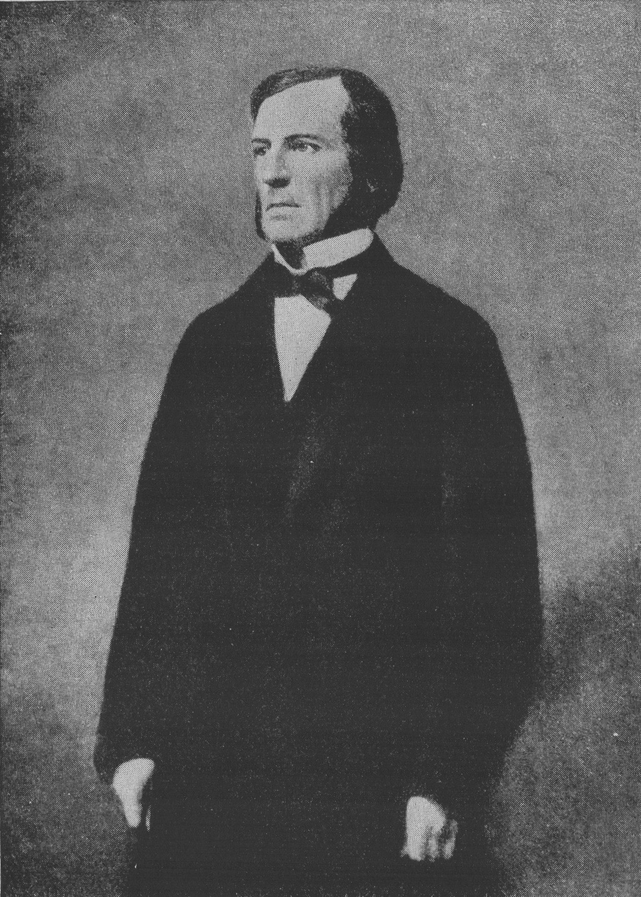
George Boole (1815–1864), whose algebraic treatment of logic laid the foundation for computer science.
Rodney Brooks at MIT challenged classical AI's emphasis on internal representation:
"The world is its own best model."
His subsumption architecture proposed:
This approach succeeded in building robots like those that would become the Roomba, demonstrating that complex behavior could arise without explicit reasoning.
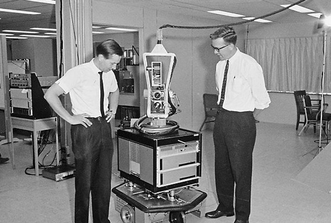
Shakey the Robot (1966–1972), the first mobile robot to reason about its actions, developed at SRI International.
The concept of intelligent agents synthesized insights from classical AI and robotics. Agents were defined by three properties:
Game theory (von Neumann and Morgenstern, 1944) provided mathematical frameworks for rational decision-making in multi-agent environments. Practical applications emerged, from autonomous underwater vehicles (HOMER) to personal assistants (Siri, 2011).
A fundamental shift occurred from knowledge engineering (hand-coding rules) to learning from data:
IBM's Deep Blue defeated world chess champion Garry Kasparov in 1997—but still relied primarily on search and hand-crafted evaluation functions rather than learning.
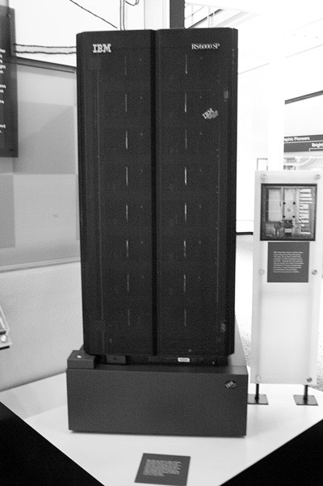
IBM's Deep Blue computer, which defeated world chess champion Garry Kasparov in 1997.
The key insight: let the data speak rather than encoding human knowledge directly.
Neural networks, after decades of limited success, returned with:
Milestones:
Modern linguistics emerged in 19th-century Germany alongside the rise of the research university (pioneered by Wilhelm von Humboldt). The dominant paradigm was historical linguistics—understanding languages through their history and evolution.
Key developments:
Ferdinand de Saussure (1857–1913) initiated a shift toward synchronic linguistics—studying language as a system at a single point in time, rather than through its history.
Key Saussurean concepts:
The Linguistic Society of America was founded in 1924. Two towering figures dominated early American linguistics:
Their students Zellig Harris and Charles Hockett continued this structuralist tradition, emphasizing systematic description and anti-metaphysical orientation consistent with the logical positivism of the era.
Harris articulated that the linguist's goal is to produce an account of how and where a language departs from equiprobability of its components—a perspective that anticipates information-theoretic approaches.
George Zipf (1902–1950) discovered quantitative regularities in language, including Zipf's Law: the frequency of a word is inversely proportional to its rank in a frequency table. However, Zipf perceived hostility toward quantitative methods among mainstream linguists.
Noam Chomsky's Syntactic Structures (1957) transformed linguistics by introducing:
Chomsky's Chomsky Hierarchy classified formal grammars by their computational power:
He famously argued that natural language syntax requires at least context-free power, demonstrating that finite-state models are inadequate for capturing linguistic structure.
Chomsky's principal contribution to the broader intellectual landscape was bringing algorithmic thinking and a sense that formal analysis provided a new kind of explanation to mainstream linguistics. However, he also argued that language cannot be learned from data alone—that children must possess rich innate knowledge to acquire language from limited input (the poverty of the stimulus argument).
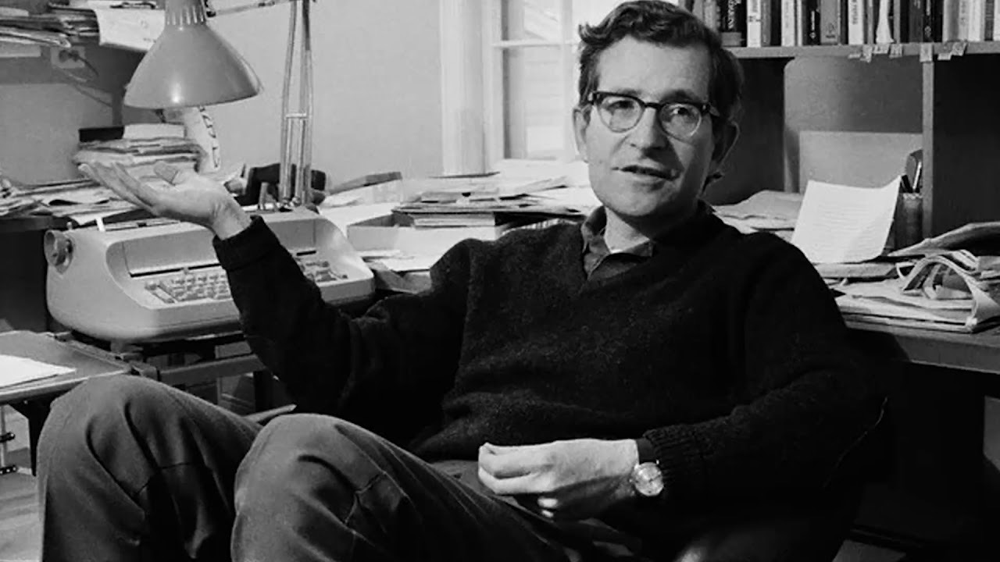
Noam Chomsky (1928–), whose theory of generative grammar revolutionized linguistics and influenced computer science.
Machine translation was the first major goal of computational linguistics, driven by Cold War imperatives to translate Russian scientific literature.
The Georgetown-IBM experiment (1954) publicly demonstrated Russian-to-English translation of selected sentences. Researchers made optimistic predictions that high-quality machine translation was imminent.
Warren Weaver's famous 1949 memorandum proposed treating translation as a code-breaking problem, suggesting that statistical and information-theoretic methods could unlock the secrets of language.
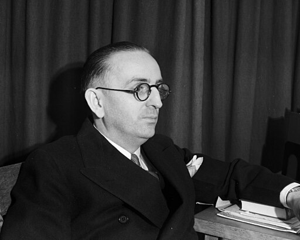
Warren Weaver (1894–1978), mathematician who proposed statistical approaches to machine translation.
Institutional developments:
The ALPAC (Automatic Language Processing Advisory Committee) Report (1966) assessed ten years of machine translation research and concluded that MT had not lived up to its promises. The report recommended:
Yehoshua Bar-Hillel, who had directed the MT project at MIT, wrote influential critiques arguing that fully automatic high-quality translation was impossible without machine understanding of world knowledge.
Funding for MT research largely dried up in the United States for over a decade.
NLP research shifted toward hand-crafted linguistic rules:
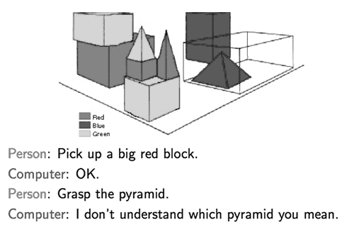
SHRDLU's blocks world (1970), where the system could understand and respond to natural language commands about moving blocks.
Limitations:
Claude Shannon's information theory (1948) provided crucial tools for understanding language:
Shannon famously demonstrated that English has significant redundancy by showing that humans can accurately guess missing letters in text—suggesting that statistical regularities could be exploited for NLP.
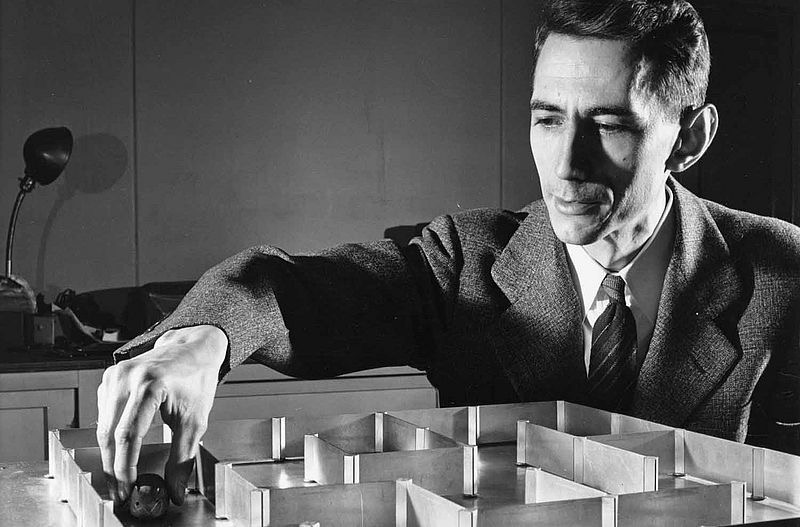
Claude Shannon (1916–2001), the father of information theory, whose work provided crucial mathematical tools for understanding language.
A paradigm shift occurred in computational linguistics, driven by speech recognition research at IBM and elsewhere:
Fred Jelinek, leading IBM's speech recognition group, famously quipped: "Every time I fire a linguist, our system performance improves." This reflected the tension between rule-based approaches and statistical methods.
Three key principles emerged from statistical NLP:
The creation of linguistic resources enabled this revolution:
Machine learning became central to NLP:
Shared tasks drove methodological progress:
Word2Vec (Mikolov et al., 2013) revolutionized how NLP represents words:
The Skip-gram and CBOW architectures learned these representations from large text corpora without any labeled data. GloVe (2014) achieved similar results using global co-occurrence statistics.
Dense word vectors replaced hand-engineered sparse features across virtually all NLP tasks.
Neural network architectures transformed sequence modeling:
Attention mechanisms (Bahdanau et al., 2014) allowed models to focus on relevant parts of the input, dramatically improving translation quality.
Neural machine translation surpassed statistical MT, and Google deployed neural translation systems in 2016.
"Attention Is All You Need" (Vaswani et al., 2017) introduced the Transformer:
Key innovations:
The Transformer architecture enabled:
Scaling Transformer models to unprecedented sizes revealed emergent capabilities:
New capabilities emerged:
The field continues to grapple with fundamental questions:
The tension between Chomsky's view that language requires innate, language-specific knowledge and the empiricist view that language can be learned from data remains unresolved—though modern LLMs have demonstrated language capabilities that would have seemed impossible to achieve through learning alone just decades ago.
The histories of computing, AI, and NLP have been deeply intertwined from the beginning. Algorithms developed millennia ago laid the groundwork for computational thinking. The formalization of logic and computation in the 20th century enabled both AI and the computer systems to implement it. Linguistics provided the theoretical understanding of language structure, while information theory offered mathematical tools for modeling language statistically.
Today's large language models represent a convergence of these threads: massive computational power (fulfilling Moore's Law), neural network architectures refined over decades, statistical learning from unprecedented amounts of data, and evaluation against linguistic benchmarks developed by the NLP community.
Understanding this history helps us appreciate both how far we have come and the enduring questions that remain. Each generation has built upon—and sometimes rejected—the work of the previous generation, yet the fundamental questions about the nature of language, meaning, and intelligence persist.